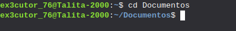
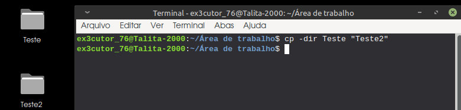
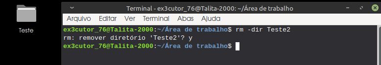
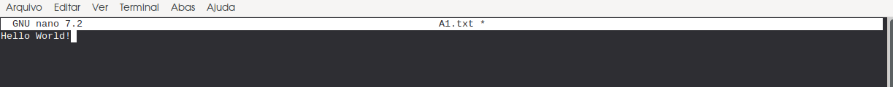
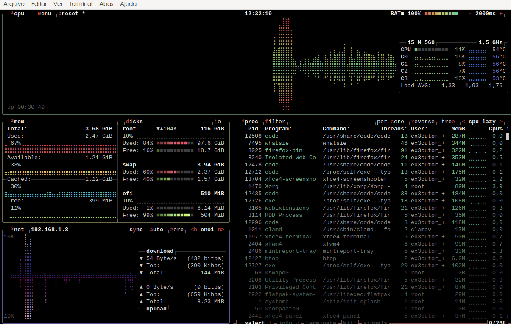
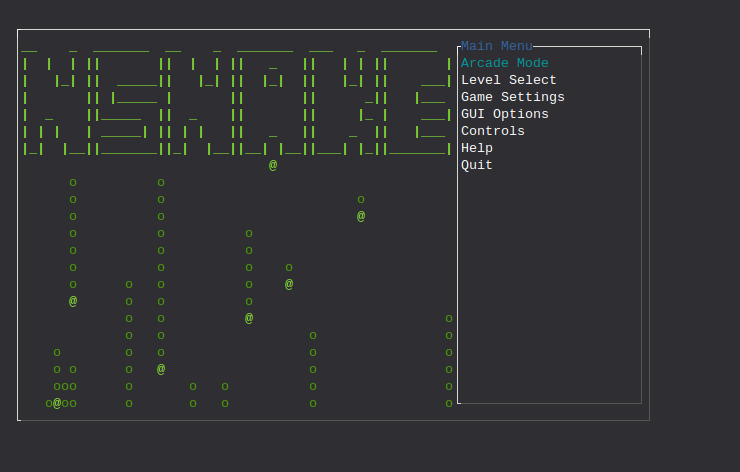
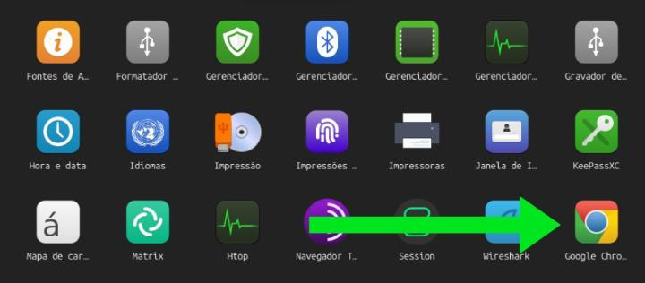
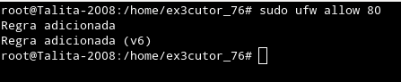
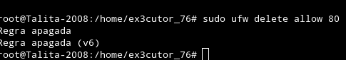
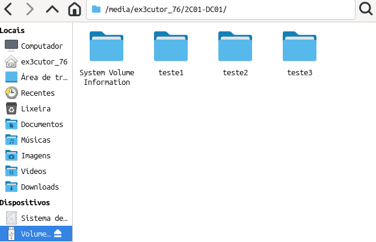

Comandos básicos do terminal:
Bem esse tópico é para aquelas pessoas que estão migrando para o Linux ou que tem uma curiosidade,
por aqui irei te passar alguns comandos básicos do Linux, então... Espero que aprendem rápido
porque são bem simples.
ls:
O comando ls ele meio que lista os arquivos, então... abaixo estará um exemplo:

Aqui por exemplo usei o ls para listar os arquivos, mas se caso você
quiser ver todos os arquivos existentes no computador use o comando ls -a que irá listar uma variedade de arquivos.
cd:
O comando cd serve para entrar em um diretório, a imagem abaixo irá mostrar o exemplo:
 Aqui por exemplo eu acabei de entrar no diretório Documentos.
E se caso você quiser sair do diretório é só usar o comando: cd ..
mkdir:
O comando mkdir serve para você criar um diretório, abaixo estará um exemplo:

Aqui por exemplo acabei de criar um diretório chamado de "Teste" na área de trabalho do meu Linux.
cp:
O comando cp serve para copiar arquivos e diretórios, a imagem abaixo irá mostrar um exemplo:
 Bem aqui eu tive que especificar colocando o "-dir" para eu dizer que quero
copiar um diretório e bem como pode ver eu coloquei o nome do diretório cópia como "Teste2" que logo é a cópia do "Teste"
rm:
O comando rm ele serve para remover arquivos e diretórios, abaixo estará um exemplo:
 Aqui por exemplo utilizei o rm para remover o diretório cópia "Teste2"
Aviso: Nunca utilize o comando: rm -r -f (Isso porque você estaria matando o sistema operacional apagando
arquivos que fazem o sistema operacional funcionar.)
touch:
O comando touch ele serve para criar um arquivo vazio, abaixo estará um exemplo:

Aqui por exemplo acabei de criar um arquivo txt com o nome de "A1"
nano:
O comando nano serve para editar arquivos, abaixo está um exemplo:
 Aqui por exemplo estou editando o arquivo A1.txt, e acabei escrevendo "Hello World!"
e para eu salvar eu só preciso dar ctrl + O para salvar e para sair só dar um ctrl + X.
cat:
Não, com esse comando você não cria um gato (Infelizmente), mas com esse comando você pode ver o conteúdo do arquivo, abaixo estará um exemplo:

Aqui por exemplo ele me mostrou o que estava escrito no arquivo A1.txt que no caso a mensagem foi "Hello World!"
mv:
O comando mv serve para 2 coisas, renomear e mover arquivos, abaixo estará os dois exemplos:
Exemplo 1:

Aqui por exemplo eu acabei de renomear o "A1.txt" para "Cobaia1"
Exemplo 2:

Admito que aqui tive algumas complicações, já que não me acostumo a mover diretórios no terminal, mas seria basicamente isso: mv "Nome do arquivo" /home/seu_user/o diretório que você quer
find:
O comando find serve para você procurar arquivos, abaixo estará um exemplo:

Aqui neste exemplo eu acabei de procurar um repositório chamado de "Testes"
clear:
Como já diz o nome do comando ele meio que limpa, então se você usar ele, ele vai limpar o terminal deixanto tudo vazio.
history:
Este comando serve para mostrar seu histórico de comandos do terminal, e sim ele lista todos até você apagar, mas se caso queira limpar o histórico de comandos use: history -c
man:
O comando man é basicamente um manual dos comandos, então tipo é com esse comando que você irá entender os outros comandos, porque ele é tipo um manual, e se caso queira testar é assim que ele funciona: man "nome do comando"
ping:
O comando ping serve para verificar a conectividade com o host, terá uma imagem de exemplo abaixo:

Aqui por exemplo eu quis verificar a conectividade com o host da google.
Aviso: se quiser que o comando pare, use ctrl + C
ifconfig:
O comando ifconfig serve para mostrar as configurações de rede, inclusive é com esse comando que mostra seu IP.
Aviso: Esse eu não irei mostrar imagem porque pode conter informações sensíveis como o IP.
iwconfig:
Com esse comando você pode configurar e visualizar parâmetros de interfaces de rede wifi.
wget:
O comando wget serve para você fazer downloads de arquivos na internet, abaixo estará um exemplo:

Aqui por exemplo acabei de fazer um download do arquivo do Youtube, e ele salvou como um arquivo index.html que seria um tipo de script em HTML.
passwd:
Com esse comando você pode alterar a senha de usuário
sudo:
Com esse comando você pode ter acesso ao super usuário ou no caso o root. (No caso se quiser você pode usar o comando: "sudo su" para entrar como root no terminal.)
adduser:
Com esse comando você adiciona um usuário.
btop:
O comando btop serve para gerenciador de tarefas, de tipo quanta CPU um programa tá usando e abaixo estará mais ou menos como que ela mostra:

top:
O comando top também é a mesma coisa do "btop", só que ele é mais usado entre usuários linux devido a fácil compreensão das informações, abaixo estará um exemplo de como ela mostra isso.

cava:
Com esse comando você simplesmente pode ver umas barrinhas subindo e descendo, isso deve ser porque literalmente mostra as ondas sonoras do áudio.
df -h:
Com esse comando ele mostrará o uso de espaço em disco.
lsblk -l:
Com esse comando ele irá listar discos e partições do seu computador.
Se quiser ver mais detalhadamente use: lsblk -f
nmcli dev wifi:
Com esse comando ele irá mostrar algumas redes wifi a sua volta, além de mostrar informações de segurança, sinal e etc.
Bem agora por aqui vai ser extenso, mas vamos lá...
Como desinstalar ou instalar coisas no Linux?
sudo apt install nome-do-programa = Instalar coisas via apt.
flatpak install nome-do-repositório-flatpak = Instalar coisas via flatpak.
sudo snap install nome-do-programa = Instalar coisas via Snap.
sudo apt-get install nome-do-programa = Instalar coisas via apt-get.
sudo apt remove nome-do-programa = Desinstalar coisas via apt (Use o comando: apt list para ver os programas.)
sudo apt purge nome-do-programa = Desinstalar completamente (A diferença desse comando para o anterior é que esse desinstala
completamente tudo, inclusive os restos dos arquivos.)
flatpak uninstall nome-do-programa = Desinstala coisas via Flatpak (Se quiser saber qual o nome do programa use o comando: flatpak list)
sudo snap remove nome-do-programa = Desinstala coisas via Snap (Se quiser saber qual o nome do programa use o comando: snap list)
sudo apt-get remove nome-do-programa = Desinstala programas via apt-get.
Outros comandos importantes:
sudo apt update = Ele lista os arquivos e programas que precisam de atualização.
sudo apt upgrade = Ele atualiza os arquivos e programas que precisam de atualização.
Mas se caso você quer ver a lista e atualizar ao mesmo tempo use: sudo apt update && apt upgrade
Flatpak update = Procura atualizações e atualiza programas instalados via flatpak.
sudo apt-get update = Faz uma lista de arquivos e programas que precisam ser atualizados.
sudo apt-get upgrade = Atualiza os programas que precisam de atualização.
E bem esses foram alguns comandos básicos que posso te ensinar, mas se caso você quer aprender mais profundamente, recomendo você visitar alguns fórums da comunidade linux, lá eles ensinam bastante coisa
que inclusive até pode responder suas dúvidas.
Comandos divertidos do Linux:
sl:
Com o comando sl literalmente irá aparecer um trem no seu terminal (Para baixar é só usar: apt install sl)
oneko:
Com o comando oneko simplesmente vai aparecer um gato no seu terminal que irá perseguir seu mouse é muito fofo e
divertido (Para baixar use: sudo apt install oneko)
nsnake:

Já pensou em jogar o jogo da cobrinha no terminal? Se liga nesse comando que legal então,
literalmente você joga o jogo da cobrinha que provavelmente todo mundo já jogou, só que no terminal.
(Para instalar use: sudo apt install nsnake)
ninvaders:

Outro jogo legal que provavelmente todo mundo já jogou, e sim ele pode ser jogado no terminal (Para baixá-lo use: sudo apt install ninvaders).
Atualização de 03/12/2025:
Como baixar arquivos com extensão .deb:

Aqui por exemplo no terminal eu estou instalando um arquivo .deb do chrome onde eu usei o comando: sudo dpkg -i google-chrome-stable_current_amd64.deb (que é um
arquivo .deb que instalei no site da google.)
Imagem final de que realmente funcionou

E certo mas, lembro-me que odeio usar google, então, como farei pra desinstalar? Simples:

No caso por aqui utilizei o comando: sudo apt-get purge google-chrome-stable
Que no caso com esse comando vai desinstalar completamente o chrome e alguns de seus arquivos que ficam no computador
(Que inclusive consome muita memória e seu computador fica lento).
Atualização de 08/12/2025:
Como mexer no firewall pelo terminal Linux?
Bem quando nós queremos segurança a primeira coisa que pensamos é no firewall, já que é o firewall que permite
o que entra e o que sai do sistema baseado em regras e bem é possível mexer no firewall através do terminal e claro
só irei mostrar os comandos do firewall que são mais usados, já que tem alguns que não irão ser tão úteis, já que são bem
específicos.
sudo ufw status:
Com este ele só avisa se o seu firewall está ativo ou não.
sudo ufw enable:
Com este comando você ativa o firewall
sudo ufw disable:
Com este comando você desativa o firewall
sudo ufw allow (porta):
Com este comando você permite uma porta em específica, abaixo estará um exemplo:

Na imagem de exemplo eu acabei de permitir a porta 80.
sudo ufw deny (Porta):
Com este comando você bloqueia uma porta em específica, abaixo estará uma imagem de exemplo.

Na imagem de exemplo eu acabei de bloquear a porta 80.
sudo ufw delete allow (porta):
Com este comando você remove uma regra, abaixo estará um exemplo:

Na imagem por exemplo, eu acabei de deletar a regra da porta 80.
Alguns comandos bem úteis também:
sudo ufw status numbered: Com este comando você consegue ver algumas regras existentes no seu firewall.
sudo ufw limit ssh: Limita tentativas de conexão (Perfeita para se proteger de ataques de DDoS).
sudo ufw status verbose: Ele é tipo o "sudo ufw status" só que ele te dá uma visão mais avançada sobre seu firewall.
Atualização de 14/12/2025:
2to3:
Com este comando você pode modificar um código do python2 para python3 e aqui está como funciona:
Instale a ferramenta usando: apt install 2to3
Faça uma cópia do arquivo python2: cp (nome do arquivo).py (nome-do-arquivo2).py
Agora altere o código: 2to3 (nome-do-arquivo2).py
Atualização 17/12/2025:
lsd:
O comando "lsd" e pelo amor de Deus não pense coisa errada, esse comando ele tem o mesmo objetivo do "ls" padrão que conhecemos
a única diferença é que ele é um pouco mais bonito e adiciona uns icones sobre o arquivo (Exemplo: Se for diretório tem um icone de uma pasta)
e relaxa abaixo tem uma imagem de exemplo:

Como instalar:
Apenas use: sudo apt install lsd
gnuchess:
Já pensou em jogar xadrez no terminal? Pois e isso é possível, só a forma de jogar que é estranha, já que você terá que escrever, e bem
eu não ensino xadrez aqui no site, mas uma dica? No site https://www.chess.com/ que ensina xadrez e que você
pode jogar com outras pessoas, bem do lado na hora da partida mostra algumas escritas como por exemplo "e4" quando você move o peão.
Como instalar:
Apenas use: sudo apt install gnuchess
clamscan:
Bem além desse comando ser muito importante ele é ótimo para se caso no Linux você se sente com medo de pegar vírus, já que o
clamscan na verdade é um antivírus da ClamAV que é um antivírus opensource que pode ser usado via terminal.
Como instalar:
Só usar o comando: sudo apt install clamav
Como atualizar:
Sim até eu fico impressionado disso, mas para atualizar ele é bem diferenciador já que você usa esse comando: sudo freshclam
Atualização de 23/12/2025:
Como se conectar a internet pelo terminal?:
Bem você já conhece o comando "nmcli dev wifi" que ele lista as redes wifi disponíveis certo? Mas e agora? Como
que se conecta na rede wifi pelo terminal? Muito simples caro visitante, abaixo terá o comando que é bem fácil:
No terminal quando você listar as redes wifi digite este comando para se conectar na rede wifi: nmcli dev wifi connect "nomedarede" password "senhadarede"
Como formatar um pen drive pelo terminal?:
Uma coisa bem importante, então recomendo que preste bem atenção:
Primeiro de tudo coloque o seu pen drive na USB.
Como podem ver neste pen drive para testes coloquei 3 pastas completamente vazias, para o teste
e agora vamos formatar este pen drive.
Agora no terminal para listar os drivers digite: lsblk

Agora que listamos os drivers, como vamos saber qual é o pen driver? Simples, no meu caso por exemplo
é o sdb, mas as vezes vem números nesse "sdb", então coloque com forme for no seu (Se caso ter número no sdb coloque como exemplo: sdb1).
Agora o próximo passo vai ser desmontar com o comando: sudo umount /dev/sdb

Bem agora que desmontamos o pen driver é hora de formatar.
Agora nesse passo final existem diversos (Sem ser o GPT) tipos de formatação sendo eles:
FAT32: Melhor para dispositivos pequenos e para compartilhamento entre diferentes sistemas operacionais.
NTFS: Ideal para sistemas Windows, oferecendo segurança e recursos avançados, entretanto não é compátivel com Linux e MacOS
EXT4: Melhor para sistemas Linux, com alta performance e recursos avançados, mas dificil de usar em outros sistemas operacionais.
E bem agora que você conhece essas diferenças, vamos formatar para FAT32 usando: sudo mkfs.vfat -F 32 /dev/sdb

E pronto formatamos nosso pen driver para FAT32.
Resulto:

Alguns outros comandos da formatação:
FAT32: sudo mkfs.vfat -F 32 /dev/sdb
NTFS: sudo mkfs.ntfs -f /dev/sdb
EXT4: sudo mkfs.ext4 /dev/sdb